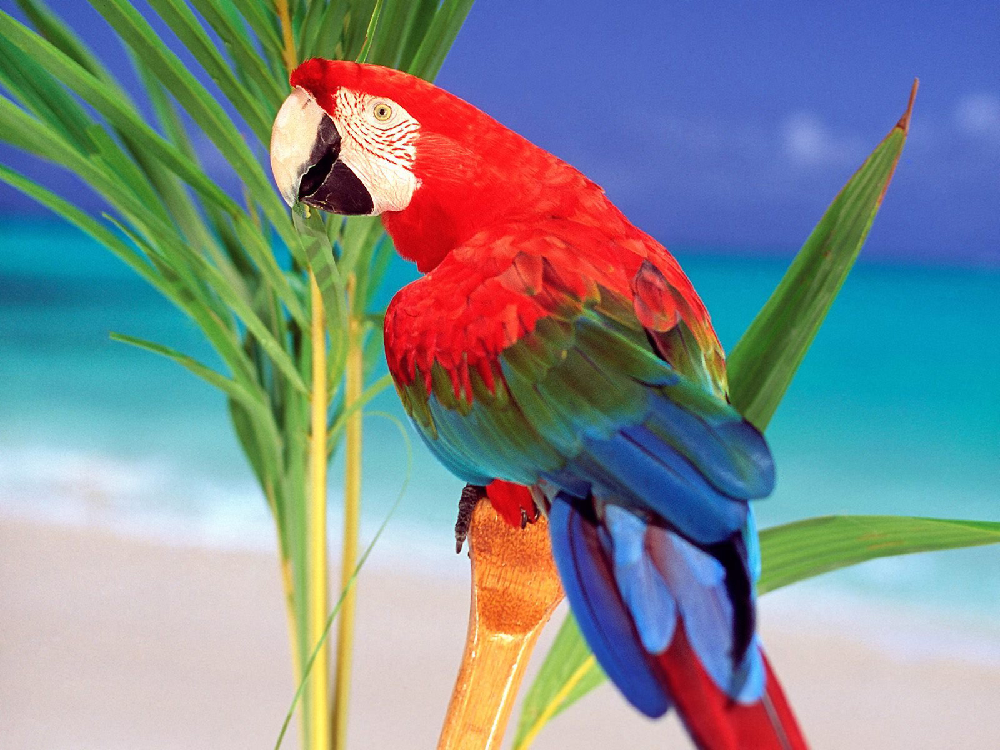
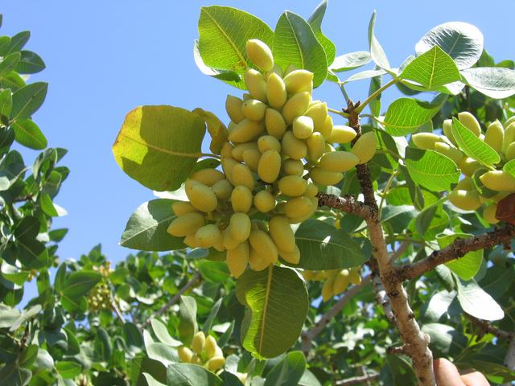
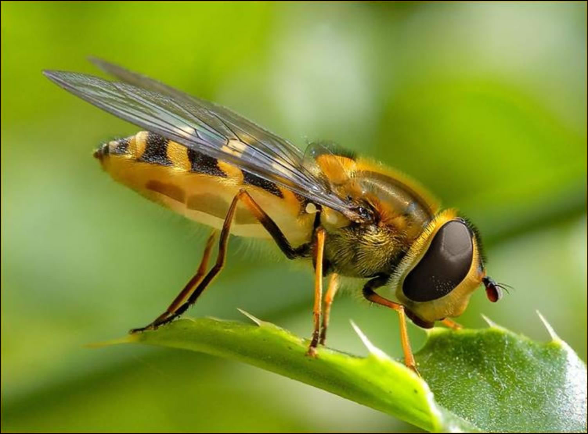
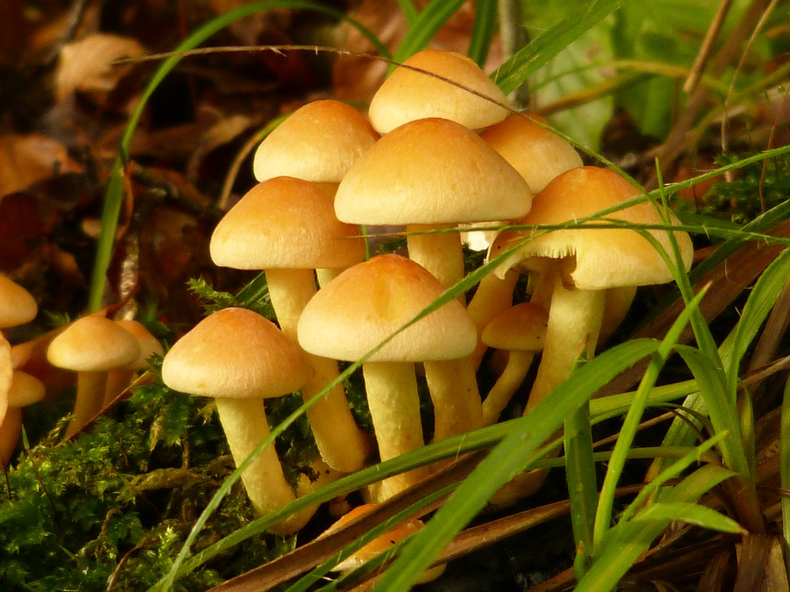

Brazil ranks third on the list of countries, behind Colombia and Peru, with the most number of distinct bird species, having 1622 identified species, including over 70 species of parrots alone. It has 191 endemic birds. The variety of types of birds is vast as well, and include birds ranging from brightly colored parrots, toucans, and trogons to flamingos, ducks, vultures, hawks, eagles, owls, swans, and hummingbirds. There are also species of penguins that have been found in Brazil.

Famous for reaching heights of over 160 feet, the Brazil nut tree towers above other trees in the Amazon rainforest. During January and February, its fruit -- which is the size of a baseball and can weigh up to 5 pounds -- ripens and falls to the ground, reaching speeds of up to 50 mph on its descent. Inside the fruits’ hard, woody exterior are anywhere from 10 to 21 nuts arranged in a pattern similar to segments of an orange.

Rainforest invertebrates come in an incredible array of sizes, ranging from organisms that can sit on a pinhead to the goliath beetle of Africa, which can weigh nearly a quarter of a pound (110 grams). Some Bornean stick insects—which are experts in disguise—can attain a length of more than 20 inches (50cm).

Mushrooms and some fungi scavenge by sending down long filaments (called mycelium) which penetrate wood and soil, breaking these elements down in the process. When they are ready to reproduce, a fruiting body is sent to the surface and spores are produced and dispersed. This part of the life cycle is visible to the casual observer and it depends on the climate as to when and how long this phase takes.